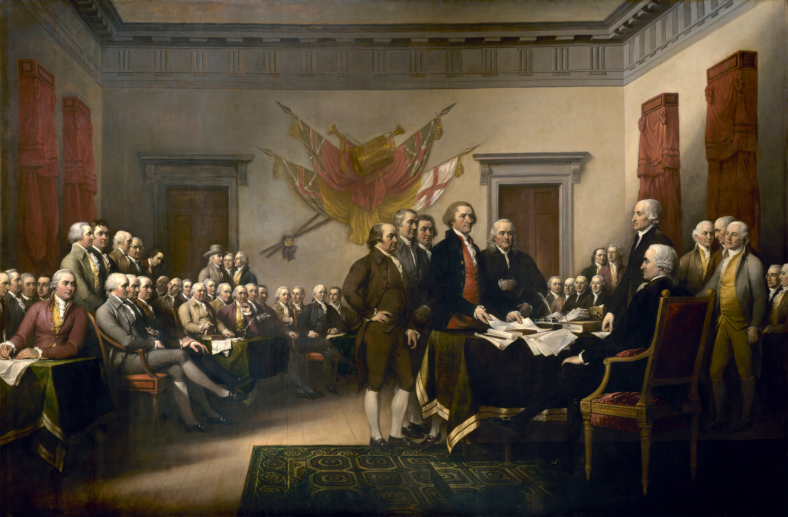
America's Birthday
The Story of the Fourth of July

The Story of the Fourth of July
You live in a country called America! It has a flag with stars and stripes. But did you ever wonder -- where did this country come from? Was it always here? Was it here when the dinosaurs were here? Nope! So how did it start? Let's find out!
A long, long time ago, before there was a country called America, people already lived on this land. They had been here for thousands and thousands of years! They built homes, grew food, told stories, and took care of the land. This was their home.
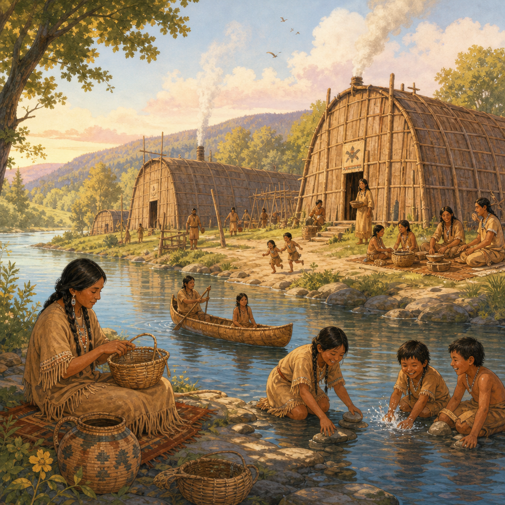
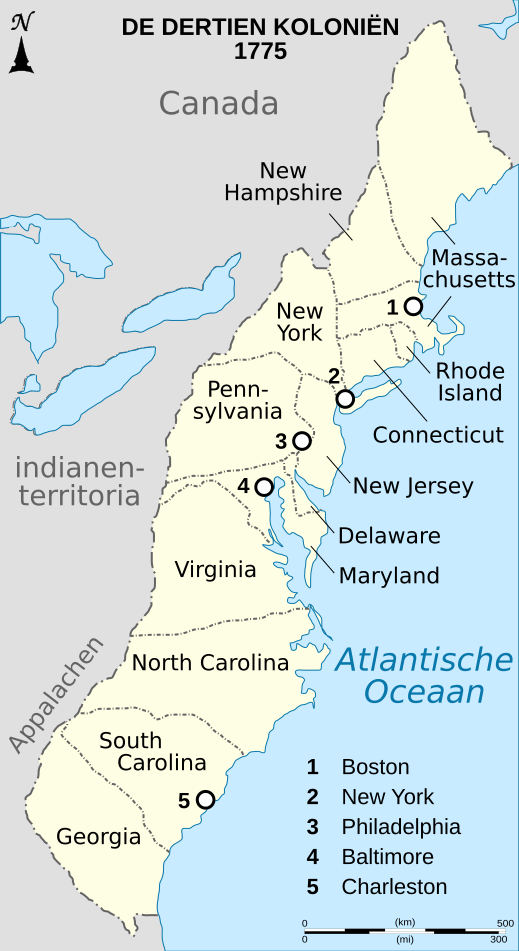
Then people sailed across the ocean from a faraway place called England. They built towns along the coast. The King of England was their boss. He made all the rules -- even though he lived so, so far away!
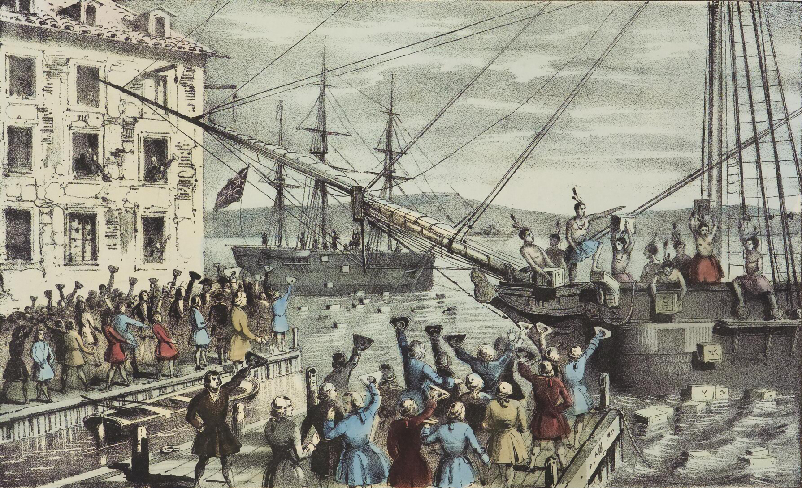
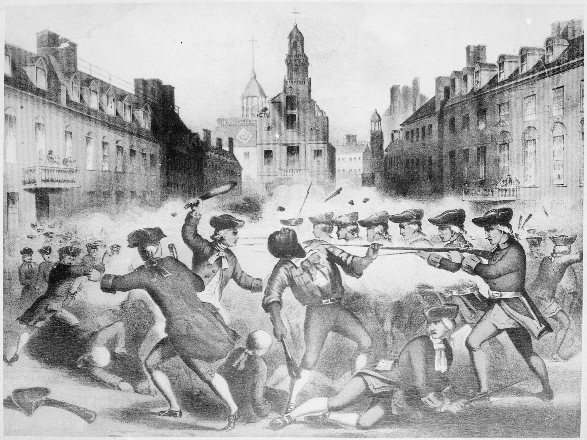
The King kept making people pay more and more money. But they had no say in the rules! That made them very angry. 'That is not fair!' they said. They even dumped a whole bunch of tea into the ocean to show how mad they were!
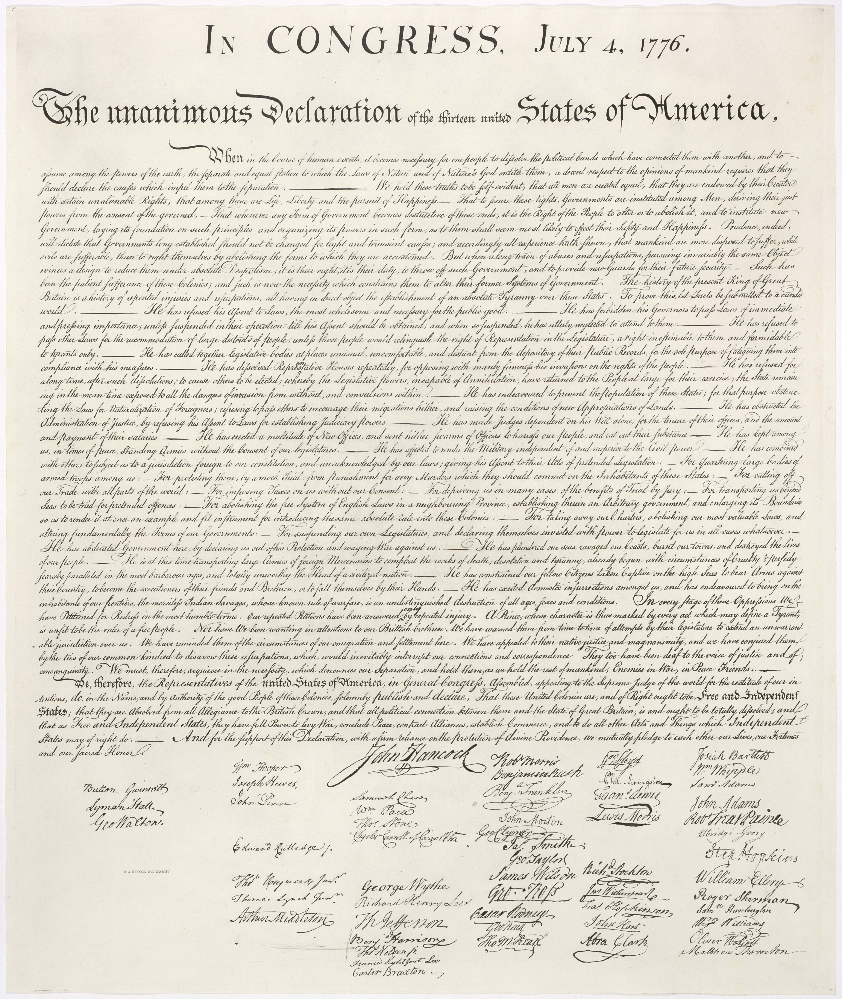
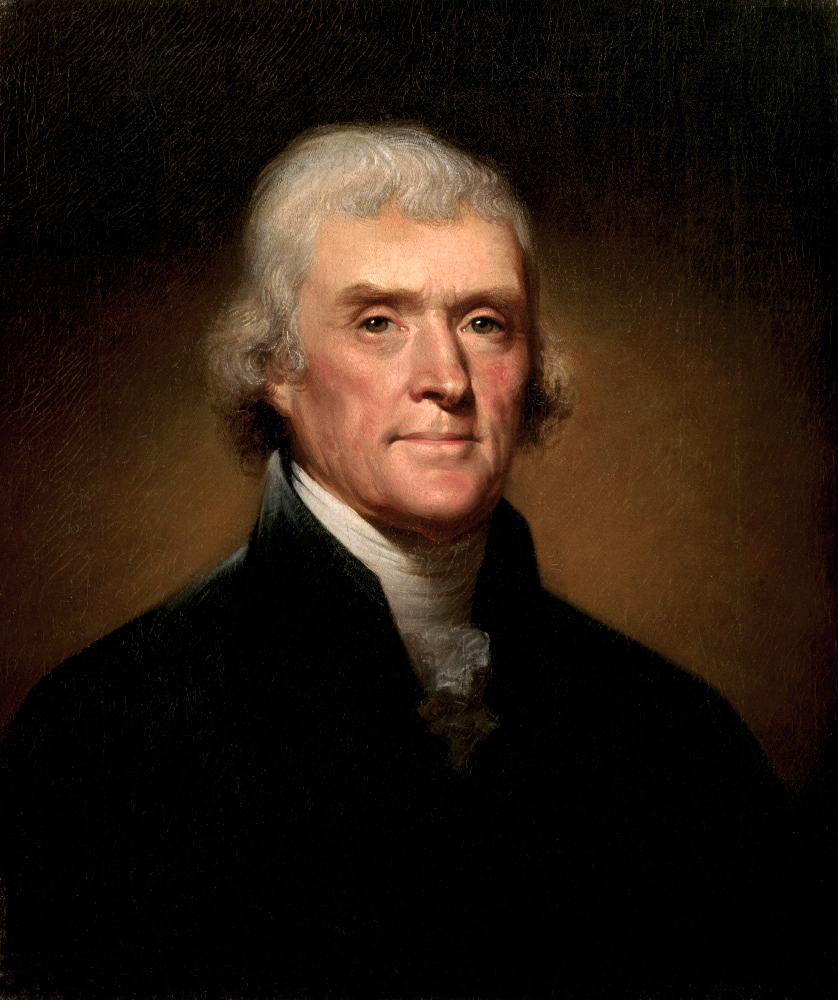
So the people decided to write a very important letter. It said: 'We do not want to follow your rules anymore! We want to be free!' A man named Thomas Jefferson wrote most of it. On July 4, 1776, everyone said YES! That is why we celebrate the Fourth of July!
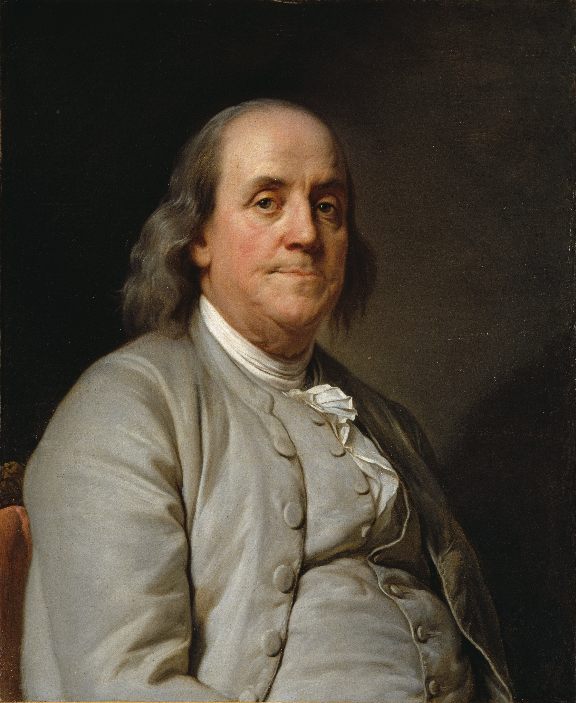
The letter said something beautiful: all people are created equal. Everyone deserves to be free and happy. But here is the sad part. Not everyone was included. Many Black people were forced to work and were not free. And the people who lived here first? They were left out too.
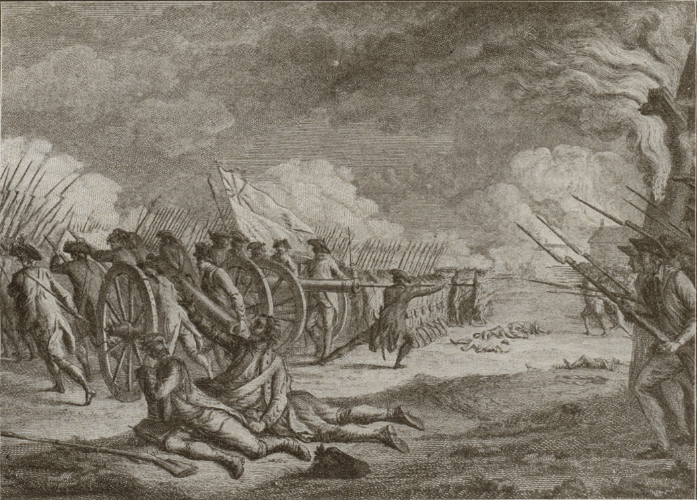
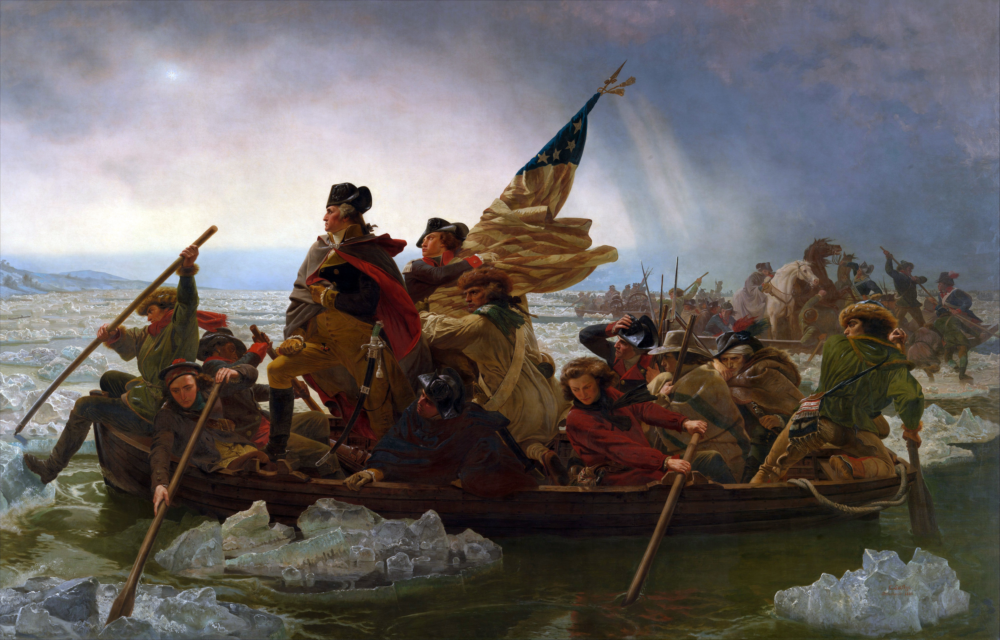
The King said NO! He sent soldiers to fight. The people here had to fight back. George Washington led their army. It was a long, hard fight. But friends from France came to help! After many years, they finally won.
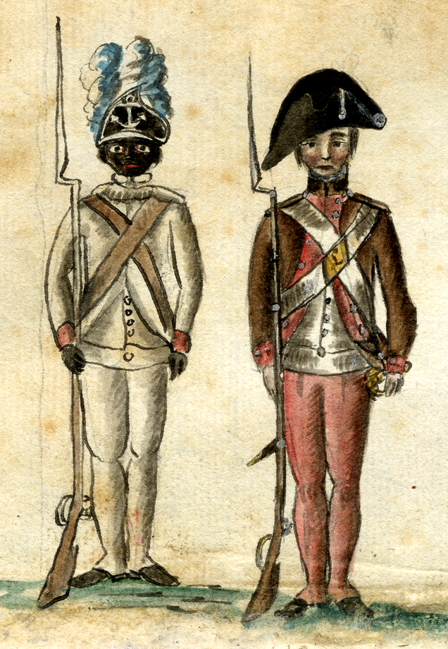
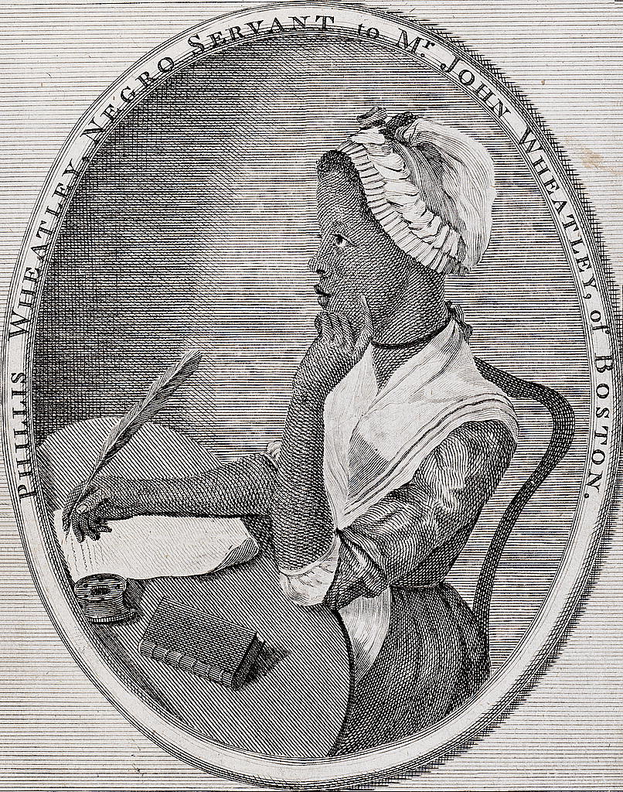
Even though many Black people were not free, some fought bravely in the war. They hoped freedom would come for them too. A woman named Phillis Wheatley wrote beautiful poems about being free -- even though she was not free herself.
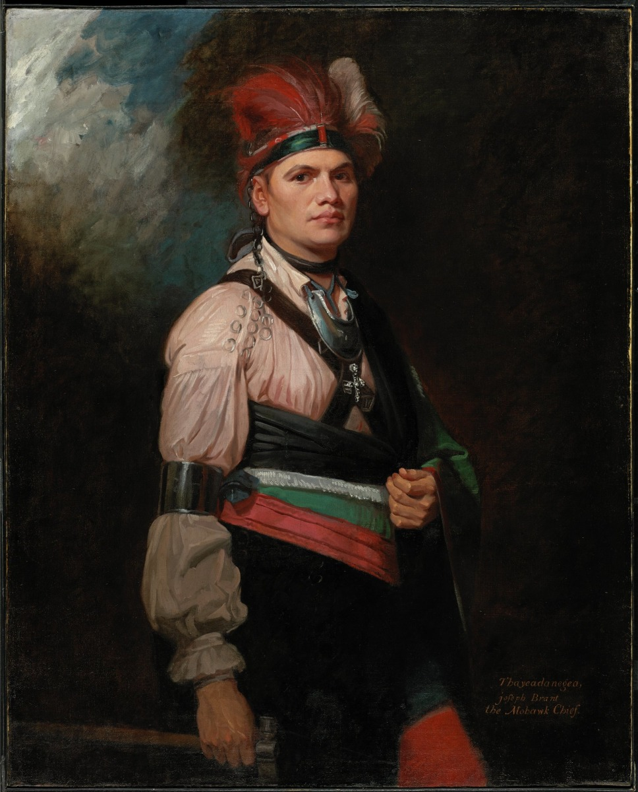
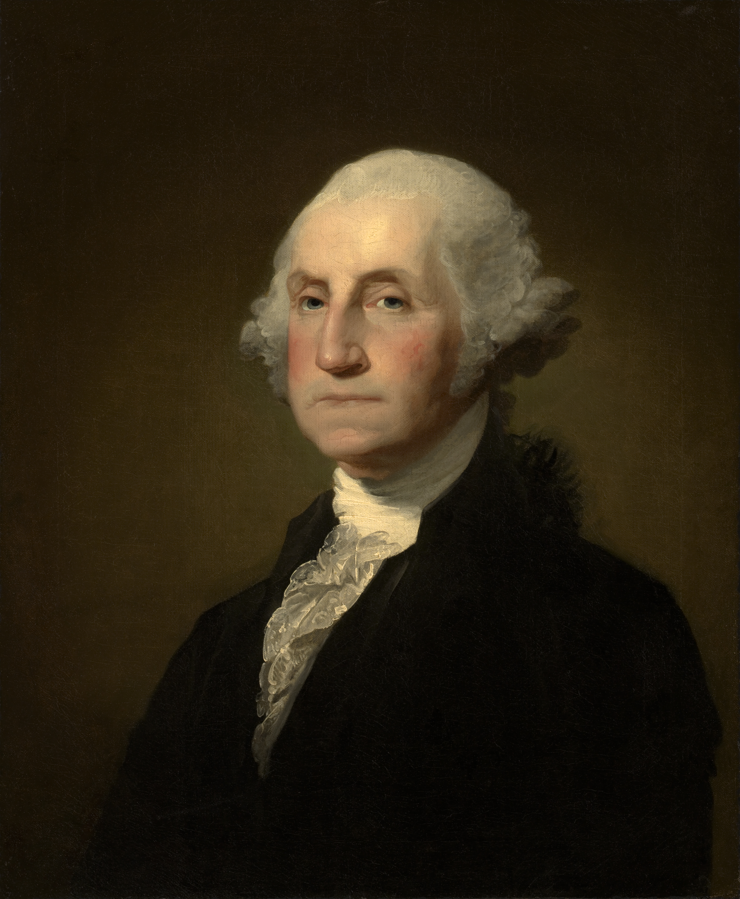
The war was hard for the people who lived here first too. Some helped one side, some helped the other. But after the war, the new country kept taking more and more of their land. That was not fair either.
Today, every Fourth of July, we celebrate America's birthday! We watch fireworks go BOOM in the sky. We have parades and picnics. We remember how this country started. And we remember that the promise of freedom is for everyone -- and we are still working to make that true.